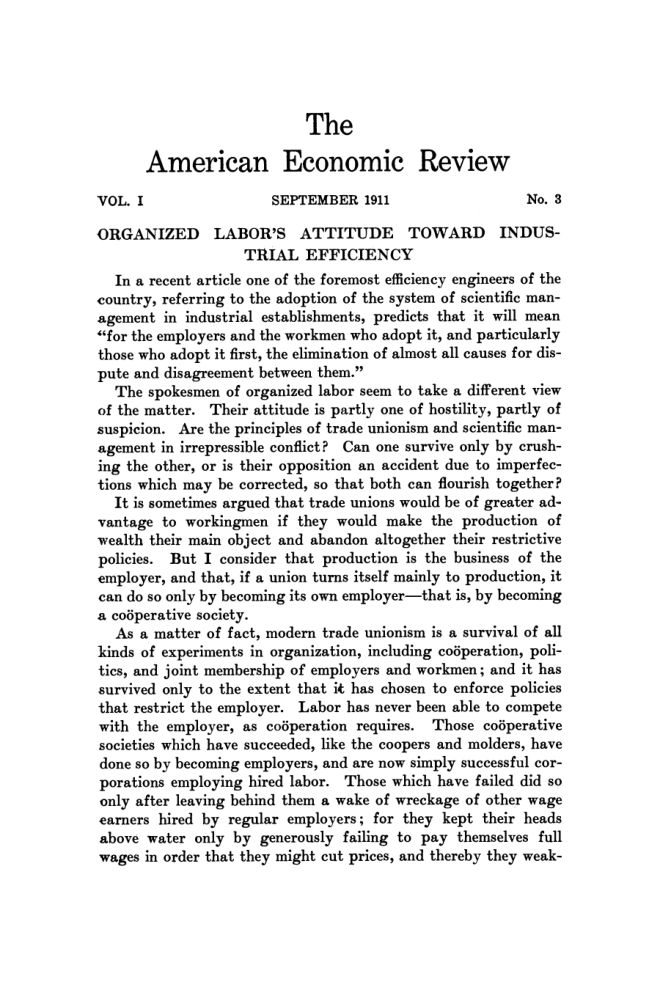

Commons, 1911: os sindicatos são contra a eficiência?
Leitura: 7 min
Commons responde aos engenheiros da administração científica: a hostilidade sindical é contra a barganha individual, e a saída é organizar a negociação antes de medir o trabalho.


Commons começa por uma promessa. Num artigo recente, um dos principais engenheiros de eficiência do país previra que a administração científica traria, para os empregadores e trabalhadores que a adotassem, sobretudo os primeiros, uma paz quase completa.
“a eliminação de quase todas as causas de disputa e desacordo entre eles” (“the elimination of almost all causes for dispute and disagreement between them”)
Os porta-vozes do trabalho organizado pensavam diferente. Sua atitude era em parte de hostilidade, em parte de suspeita. Commons formula a pergunta sem rodeios: sindicalismo e administração científica estão em conflito irreconciliável, de modo que um só sobrevive esmagando o outro, ou a oposição é acidental e corrigível?
Por que os sindicatos restringem?
Para Commons, produzir é tarefa do empregador. Um sindicato que se dedique à produção só pode fazê-lo virando seu próprio empregador, isto é, uma cooperativa. As cooperativas que deram certo, como as de toneleiros e de moldadores, viraram empresas comuns que empregam assalariados. As que falharam só se mantiveram por algum tempo pagando a si mesmas menos que o salário pleno para cortar preços, e enfraqueceram os empregadores concorrentes. O sindicato que se volta para a produção fracassa, quer tenha êxito, quer não.
O sindicalismo moderno é, portanto, restritivo por natureza: tenta amarrar as mãos do empregador. A pergunta útil não é se restringe, mas se as restrições são prejudiciais, a quem, e quem decide. Commons acrescenta que os sindicatos surgiram depois de ondas de greves, como meio de obter as reivindicações sem greve. Vencer greves na prosperidade era fácil; difícil era conservar os ganhos. Para o sindicalista experiente, preservar o sindicato importava mais, e quase todas as políticas restritivas nasciam desse esforço.
O que ensinam os fabricantes de fogões?
O exemplo de Commons vem da indústria de fogões, que ele estudara com Frey para o Bureau of Labor. Muito antes de a administração virar ciência, os fundidores já praticavam seus princípios. Aprenderam a dividir o trabalho para que um homem de três dólares nunca fizesse o serviço de um homem de um dólar, e estimulavam a produção individual por meio da tarifa por peça.
O resultado foi um círculo vicioso de eficiência inútil. Cada aumento de produção por homem trazia um corte no preço dos fogões; cada corte reduzia o prêmio do empregador pela eficiência; cada perda de lucro forçava cortes na tarifa por peça; cada corte obrigava os trabalhadores a produzir mais pelo mesmo ganho. Onde havia monopólio, acrescenta Commons, a capacidade de ações e títulos de absorver os ganhos de eficiência era igualmente clara para o trabalhador.
A resposta dos moldadores foi restringir: limitar aprendizes, proibir ajudantes, fixar um ganho máximo e recusar trabalhar com não sindicalizados, com multas e expulsões. A correção veio na forma de um governo representativo da indústria, o acordo coletivo, que governa o empregador com a mesma firmeza que o empregado. O fabricante que corta uma tarifa por peça é expulso da associação patronal e fica sozinho diante do sindicato. O sindicato, por sua vez, removeu as restrições à produção.
Commons vê três maneiras de evitar o conflito aberto: o domínio do empregador, como no truste do aço; o domínio do sindicato, como na indústria do ferro antes da greve de Homestead; e o domínio igual dos dois interesses, como nas fundições de fogões. As duas primeiras suprimem o problema. A terceira o enfrenta como a política enfrenta conflitos semelhantes: uma organização constitucional dos interesses afetados, com veto mútuo e compromissos progressivos.
Onde a administração científica tropeça?
Todos os sistemas modernos reconhecem um salário mínimo, que a velha teoria dos salários ignorava. A teoria do engenheiro é uma teoria da máquina: o trabalho é um dispositivo com custos fixos de manutenção, cobertos pelo mínimo, e acima disso a remuneração deve ajustar-se a cada detalhe psicológico do esforço. Commons a considera mais promissora que a antiga teoria da mercadoria, mas aponta o que lhe falta: quem a aplicará na prática será o empregador, o capataz e o superintendente, e não o engenheiro.
O contrato de trabalho, lembra Commons, é na prática um contrato novo a cada manhã. Qualquer das partes pode rompê-lo a qualquer momento, e o novo empregado pode ser admitido com outra tarifa. Sem uma autoridade ou um poder de barganha capaz de exigir que o novo contrato repita o antigo, só restam a boa-fé e o interesse próprio. Por isso o sindicalista não concebe um salário mínimo sem um sindicato ou uma lei que o imponha.
O teste está no sistema de bônus. Até os maquinistas de locomotiva, o sindicato menos acusado de políticas restritivas, exigiram que a ferrovia Santa Fe o abandonasse depois de poucos meses de experiência, embora tivessem ficado ao lado da empresa enquanto ela derrotava os mecânicos de suas oficinas e instalava ali o mesmo sistema.
“Temos medo do princípio que está por trás dele.” (“We are afraid of the principle behind it.”)
O princípio, para Commons, é o da barganha individual no lugar da barganha sindical. Os primeiros sistemas, de Taylor, Halsey e Rowan, pouco diferiam da tarifa por peça; o sistema cumulativo de Emerson calcula o bônus sobre o trabalho de um mês inteiro. Mas todos conservam o contrato individual, e cada trabalhador que ganha bônus vira o padrão de comparação para os outros. Na negociação coletiva, os empregadores argumentam com o registro dos dez melhores homens, e os empregados com o dos dez piores.
O defeito fundamental, conclui Commons, é a ordem do trabalho. Primeiro seria preciso investigar as relações de barganha, depois organizá-las de modo que conflitos de opinião e de interesse tivessem um canal de expressão e compromisso, e só então fixar padrões e registros, subordinados a essa organização. A medição exata do engenheiro é apenas uma forma mais precisa de prova, e não resolve uma questão que depende do poder de barganha das partes.
“O trabalho organizado é antes a expressão organizada do que o trabalho em geral expressaria se organizado.” (“Organized labor is rather the organized expression of what labor in general would express if organized.”)
Na minha leitura
Na minha leitura, o argumento central de Commons é um problema de incentivos na repartição de ganhos. O trabalhador não tem motivo para revelar sua capacidade nem para elevar a produção se espera que o ganho seja absorvido por cortes de tarifa, de preço ou por dividendos. A restrição de produção é a resposta racional a essa expectativa, e não um traço de caráter. A eficiência só se torna interesse comum quando existe uma regra crível sobre como o ganho será dividido.
Daí a importância que ele dá à instituição. O acordo dos fogões funciona porque obriga os dois lados: o empregador que corta tarifas é punido pelos próprios pares. A medição técnica entra depois, como prova dentro de uma negociação organizada, e não como substituta dela. É uma distinção útil entre dois problemas que costumam ser confundidos: medir a produtividade e decidir quem fica com ela.
Glossário
- Administração científica
- organização do trabalho por estudo de tempos e movimentos, com padrões de produção e pagamento ligado ao rendimento individual.
- Engenheiro de eficiência
- especialista contratado pelo empregador para reorganizar o trabalho e elevar a produção por trabalhador.
- Tarifa por peça
- pagamento proporcional ao número de unidades produzidas.
- Sistema de bônus
- pagamento extra sobre um salário mínimo garantido quando o trabalhador supera o padrão fixado.
- Acordo coletivo (trade agreement)
- contrato entre associação de empregadores e sindicato, com juntas e convenções conjuntas para resolver divergências.
- Barganha individual
- negociação das condições de trabalho entre o empregador e cada empregado isoladamente.
- Curva de fadiga
- relação, medida pelo engenheiro, entre ritmo de trabalho, cansaço e produção ao longo da jornada.
Fontes
- Organized Labor's Attitude Toward Industrial Efficiency — John R. Commons (University of Wisconsin) (pp. 463–472). JSTOR · Internet Archive (PDF)
- Edição completa, com os demais artigos: Nº 115 do Arquivo.
Documento em domínio público (EUA, publicado antes de 1931), via JSTOR Early Journal Content e Internet Archive. Resumo e comentário do autor deste site, sem afiliação com a American Economic Association. Encontrou um erro? Escreva: a correção é publicada no próprio texto, com data.
↑ Nº 115 · Setembro de 1911: sindicatos, tarifas de serviços públicos e impostos J. M. Clark, 1911: quem deve pagar pelo tamanho da usina? →